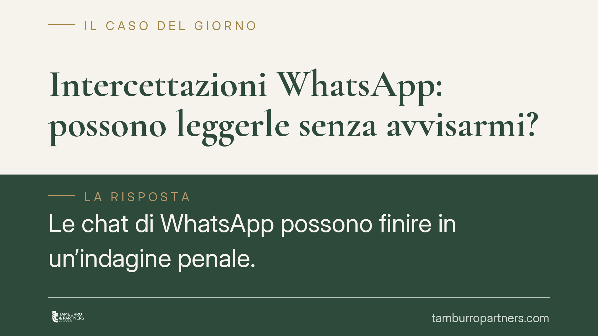

Intercettazioni WhatsApp: possono leggerle senza avvisarmi?
Le chat di WhatsApp possono finire in un'indagine penale. La legge distingue due situazioni molto diverse: l'intercettazione del flusso di comunicazioni in tempo reale e l'acquisizione di messaggi già salvati sul telefono. In entrambi i casi serve un provvedimento dell'autorità giudiziaria e nessun avviso preventivo viene dato all'indagato. Ma le garanzie che scattano non sono identiche.

Perché non arriva alcun avviso preventivo
Partiamo dal punto che genera più equivoci: non esiste, nel nostro ordinamento, un avviso preventivo all'interessato prima di una misura di controllo. Sarebbe una contraddizione logica, perché ne vanificherebbe lo scopo investigativo.
Le garanzie non spariscono: si spostano in avanti nel tempo. L'indagato viene a conoscenza dell'attività quando gli atti vengono depositati e diventano consultabili dalla difesa. È in quel momento che si può contestare la legittimità dell'acquisizione ed eccepire l'eventuale inutilizzabilità di quanto raccolto.
Intercettazioni WhatsApp: il flusso in tempo reale
Quando si parla di intercettazioni WhatsApp in senso proprio si intende la captazione del flusso di comunicazioni mentre avviene. Poiché si tratta di comunicazioni informatiche o telematiche, la norma di riferimento è l'art. 266-bis del codice di procedura penale.
Questa attività è ammessa solo entro limiti stringenti: richiede un decreto motivato dell'autorità giudiziaria, presuppone determinati titoli di reato e risponde alla riserva di giurisdizione fissata dall'art. 15 della Costituzione, che tutela la libertà e la segretezza di ogni forma di comunicazione. Nessuna forza di polizia può disporre autonomamente l'ascolto: serve sempre il vaglio del giudice.
Il problema tecnico è noto: la crittografia end-to-end di WhatsApp rende difficile intercettare il contenuto in transito. Per questo l'attività investigativa si concentra spesso sui messaggi già scambiati e conservati sul dispositivo.
L'acquisizione dei messaggi già archiviati
Qui si apre il nodo interpretativo più delicato. Un messaggio già ricevuto e salvato non è più un flusso in corso: è un dato statico. Ma con quale disciplina lo si acquisisce?
Le strade sono due e non equivalenti. Se il messaggio è qualificato come corrispondenza, si applica l'art. 254 c.p.p., che circonda il sequestro di corrispondenza di garanzie più intense. Se invece lo si tratta come mero dato informatico, entrano in gioco l'art. 254-bis c.p.p. (dati presso fornitori di servizi) e l'art. 247 c.p.p. sulle perquisizioni finalizzate all'acquisizione di dati.
La qualificazione non è un tecnicismo: incide direttamente sul livello di tutela e, di conseguenza, sull'utilizzabilità del materiale nel processo.
L'impatto della Corte costituzionale n. 170/2023
Su questo terreno la Corte costituzionale, con la sentenza n. 170 del 2023, ha fissato un principio rilevante: i messaggi WhatsApp e le e-mail restano corrispondenza tutelata dall'art. 15 Cost. anche dopo essere stati ricevuti e conservati, finché conservano un carattere di attualità comunicativa e non sono divenuti mero documento storico.
La conseguenza pratica è significativa. Molti messaggi archiviati non possono essere trattati come semplici file da acquisire liberamente: se mantengono natura di corrispondenza, la loro acquisizione richiede il rispetto delle garanzie proprie di quella categoria. Il titolo con cui si procede diventa quindi decisivo.
Annotazione metodologica: la giurisprudenza di legittimità sul punto è in evoluzione e alcune pronunce vanno verificate caso per caso; per questo, in sede difensiva, occorre sempre riscontrare la fonte e la sezione della decisione richiamata, evitando attribuzioni generiche.
Cosa fare in concreto
- Verifica il provvedimento. Controlla sempre che esista un decreto dell'autorità giudiziaria e leggine la motivazione: tipo di reato, oggetto e limiti temporali dell'attività.
- Identifica la disciplina applicata. Stabilisci se l'acquisizione è avvenuta come intercettazione (art. 266-bis c.p.p.), come sequestro di corrispondenza (art. 254 c.p.p.) o come acquisizione di dati (art. 254-bis / 247 c.p.p.): da qui dipendono le garanzie.
- Esamina la catena di custodia. Verifica come il dispositivo o i dati sono stati estratti, con quali strumenti e con quale documentazione, per valutare integrità e genuinità del materiale.
- Agisci sui tempi difensivi. Il momento del deposito degli atti apre la finestra per accedere al fascicolo e sollevare eccezioni: la tempestività è determinante.
- Valuta l'inutilizzabilità. Se l'acquisizione ha violato la disciplina corretta, il materiale può risultare inutilizzabile: è una linea di difesa da esaminare subito con un professionista.
Contributo informativo a cura di Tamburro & Partners Avvocati - Avv. Giuseppe Tamburro. Non costituisce parere legale.
Ogni condominio ha una storia a sé.
Se gestisci un'amministrazione e vuoi un confronto su una specifica questione condominiale, scrivi allo studio. Ti rispondiamo entro un giorno lavorativo.